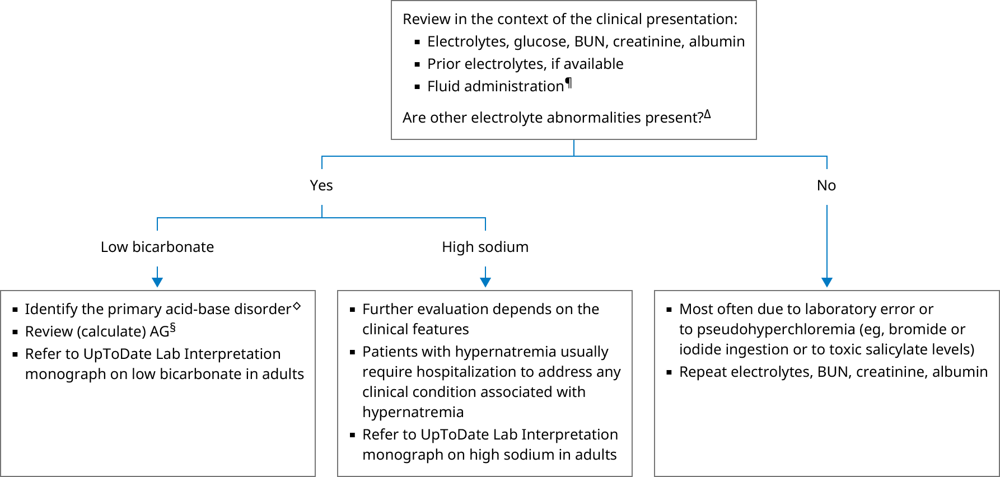

AG: anion gap; BUN: blood urea nitrogen; Cl: chloride; HCO3: bicarbonate; Na: sodium.
* The normal reference range for serum chloride is approximately 98 to 106 mEq/L. Interpretation of a specific abnormal result should be based upon the reference range reported by the laboratory.
¶ Recent infusion of a large volume of normal saline may contribute to hyperchloremia and unpredictable water and electrolyte derangement.
Δ If other electrolyte abnormalities are present (typically high sodium and/or low bicarbonate), the evaluation of these abnormalities takes precedence.
◊ Low serum bicarbonate with high chloride may reflect a primary metabolic acidosis or the compensatory response to a primary respiratory alkalosis. The diagnosis of metabolic acidosis can be made on the basis of a reduced bicarbonate alone, if chronic respiratory alkalosis is excluded on clinical grounds.
§ If not reported, AG (mEq/L) = Na – (Cl + HCO3). In patients with hypoalbuminemia, correct AG for low serum albumin: observed AG + (2.5 × [4 – observed albumin {g/dL}]).